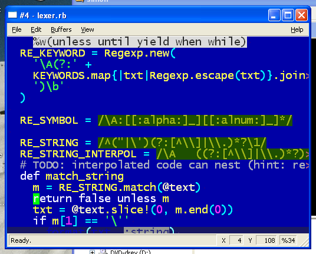
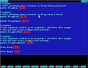
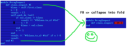
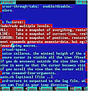
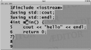
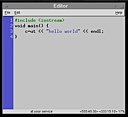
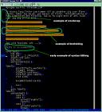

|  This is the Fox/FXRuby frontend for AEditor anno 2004. It demonstrates ruby syntax coloring. You will need to fetch the aeditor-1.x branch in order to try it out. Still a few features from the 0.x branch needs to be imported into this branch. |
|  This is the NCurses frontend for AEditor anno 2003. It demonstrates folding in action! Even though the document spans many pages, you can easily gain an overview of the different parts it consists of. In order to try it out you must fetch the aeditor-0.x branch. |
|  This is the NCurses frontend for AEditor. It shows how folding in works! |
|  This is the NCurses frontend for AEditor. It shows how 'selection' looks like. Also notice how long lines which crosses the screen border is indicated with a red 'less-than' and 'greater-than' symbol. |
|  This is the QT experimental frontend for AEditor. It shows how textures could be used in order to get a nice visual appealing interface. QT has a nice API, but it requires an extra annoying compilation step (moc). I don't know if I will continue it. |
|  This is the GTK experimental frontend for AEditor. |
|  Early prototype for MSDOS anno 1999. It was good at visualing the buffer, but really poor at editing. Making a suitable datastructure which allows for editing is extremely hard. Don't let this fool you. It was able to do folding, wordwrap and syntaxhiliting. This prototype was'nt able to do any serious editing! |
{kind=link}
{kind=link}
{kind=link}
{kind=link}
{kind=link}
{kind=link}